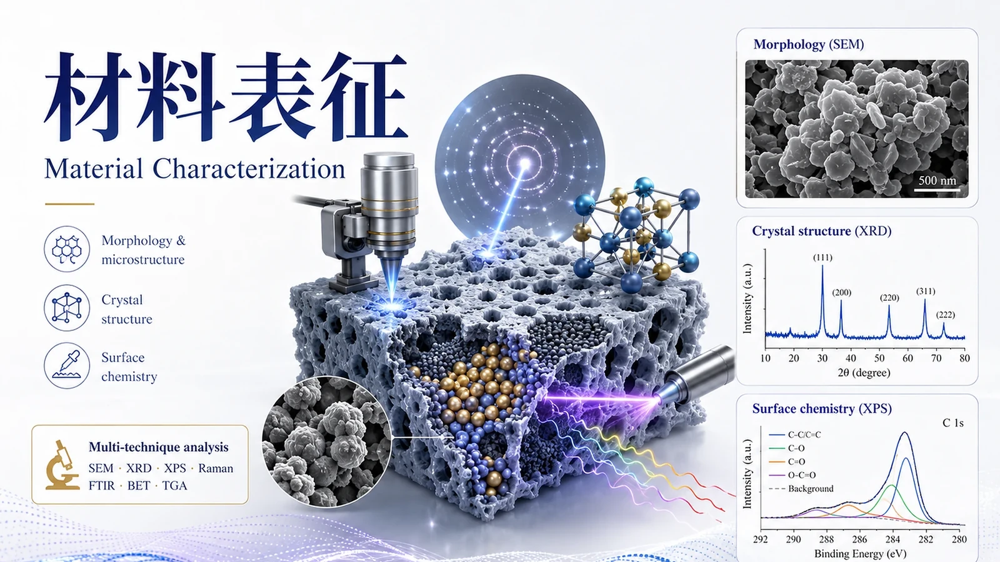

XPS + EPR + Raman + XAFS + TEM/EELS
ADVANCED MATERIALS CHARACTERIZATION
高端材料表征与原位分析
从“测一个数据”升级为“解决一个科研问题”。面向复杂材料体系，提供先进电镜、同步辐射、原位 / Operando、三维成像、先进谱学与多技术联用定制方案。
Aberration-corrected TEMSynchrotronIn-situ / Operando3D CTAdvanced SpectroscopyMultimodal

RESEARCH QUESTION FIRST
不是仪器清单，而是科研问题导向的表征方案
根据材料体系、目标机制、样品状态和论文证据链，组合适合的测试与分析路径。
XPS/UPS + KPFM + XAFS + 原位光谱
原位 FTIR + 原位 Raman + EPR + XAFS
Micro/Nano-CT + FIB-SEM + 3D Reconstruction
ADVANCED MICROSCOPY
微观形貌与界面结构
从形貌观察升级到原子尺度结构、界面、缺陷、元素与电子态协同解析。
可解决问题原子结构晶界/界面缺陷元素分布局域电子态
球差校正 TEM / STEM
HAADF-STEM、原子分辨成像、界面/缺陷结构与晶格分析，可结合 EDS/EELS 构建结构—成分—电子态证据链。
按样品与方案报价FIB 精准制样
面向截面、界面、电池、薄膜和器件的定点取样与超薄样制备，可衔接 TEM/STEM 与三维重构。
参考：2600 元/样起AFM / 纳米力学
形貌、粗糙度、粘附力、模量、力曲线、相位及局域力学映射，适合膜、聚合物和软材料。
参考：550 元/小时起CRYSTAL & PHASE
晶体结构与物相解析
面向晶相、结构转变、取向、晶格变化及复杂相组成，支持常规与高端衍射方案。
单晶 XRD
单晶结构解析、晶胞参数、空间群、键长键角与配位环境。
参考：350 元/样起原位 / 变温 XRD
跟踪反应、加热、冷却或工作状态下的物相演变与晶格响应。
按条件报价EBSD / 织构分析
晶粒尺寸、取向、晶界、织构与局部应变信息，适用于金属、陶瓷及多晶材料。
参考：650 元/小时起SURFACE & ELECTRONIC STRUCTURE
表面化学与电子结构
解析元素价态、能级、功函数、局域电势、化学键及界面电子行为。
XPS / UPS / 深度分析
元素组成、化学价态、价带、功函数及深度方向成分变化，可结合峰拟合和定量分析。
XPS 参考：30 元/元素起EPR / ESR
自由基、缺陷、未配对电子与活性物种分析，可服务催化、储能及缺陷工程研究。
参考：230–250 元/对象起KPFM / 电势与功函数
局域表面电势、接触电势差和界面电子分布映射，适合异质结、膜和二维材料。
定制报价IN-SITU / OPERANDO
原位 / Operando 表征
在反应、气氛、电化学、温度或光照条件下追踪材料与中间体的动态变化。
原位 FTIR / DRIFTS
捕获吸附物种、官能团变化和反应中间体，适合催化、吸附与界面反应。
原位 Raman
跟踪键合、晶相、缺陷和反应物种变化，可结合电化学、加热和气氛条件。
原位 XPS / 电化学
解析工作状态下的价态与界面演化，构建“结构变化—电子转移—性能”证据链。
原位项目通常需要确认样品形态、反应条件、气氛/电解液、温度、电位窗口及原位池兼容性后报价。
3D NON-DESTRUCTIVE IMAGING
三维结构与无损成像
从二维截面走向三维体结构，量化孔隙、裂纹、颗粒、纤维与内部缺陷。
工业 CT
适合较大样品与工程结构，无损观察内部缺陷、装配、裂纹和密度差异。
参考：1300 元/样起Micro-CT / Nano-CT
面向多孔材料、电极、岩土、生物材料与复合材料，进行孔隙和三维结构定量。
按分辨率与扫描条件报价三维重构与定量
可进一步进行孔隙率、连通性、粒径、厚度、裂纹和相分布等三维统计分析。
分析服务可单独定制SYNCHROTRON & ADVANCED SPECTROSCOPY
同步辐射与先进谱学
面向局域配位、价态、超快动力学、核共振与自由体积等常规仪器难以解决的问题。
同步辐射 XAFS
XANES/EXAFS 用于元素价态、配位数、键长及局域结构解析，可结合拟合与理论计算。
参考：2600 元/元素起飞秒瞬态吸收 fs-TAS
研究激发态、载流子转移、复合及超快动力学过程，适合光催化和光电材料。
参考：3100 元/样起穆斯堡谱 / 正电子湮灭
分别服务 Fe 等核环境、价态/磁性，以及空位型缺陷与自由体积研究。
参考：2600 / 1700 元起ROUTINE CAPABILITIES
常规表征能力快速入口
常规测试作为基础证据，高端测试用于关键机制验证；具体价格以样品状态、测试条件和数据分析要求为准。
形貌 / 微区SEMTEMEBSDEPMAAFM
成分 / 结构XRDXRFICP-OES/MSEATOC
光谱 / 化学FTIRRamanUV-Vis/NIRPLNMRGC-MSLC-MSEPR
物性 / 热学BETTG/DSCZETA粒径PPMSHallDMA纳米压痕
CUSTOM CHARACTERIZATION WORKFLOW
多技术联用与定制表征方案
告诉我们材料、对照组、目标机制和希望证明的问题，由测试需求反推技术组合，而不是简单叠加仪器。
缺陷与活性位点表征包
XPS / EPR / Raman / XAFS / TEM-EELS
催化机理原位表征包
原位 FTIR / Raman / XRD / XAFS + EPR
膜材料结构—性能表征包
AFM / XPS / FTIR / XRD / ZETA / 孔结构
电池界面表征包
原位 Raman / XRD / XPS + TEM + 电化学
MOF / COF 多尺度表征包
XRD / BET / TEM / XPS / Raman / XAFS
三维结构定量包
Micro/Nano-CT + FIB-SEM + 3D Reconstruction